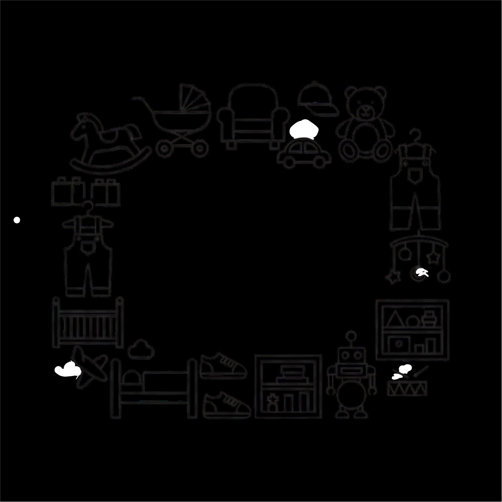
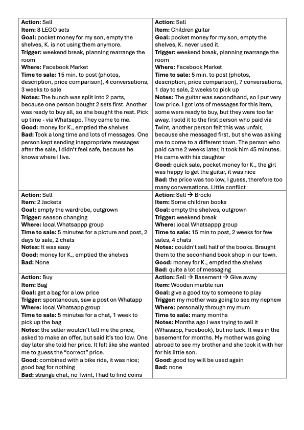
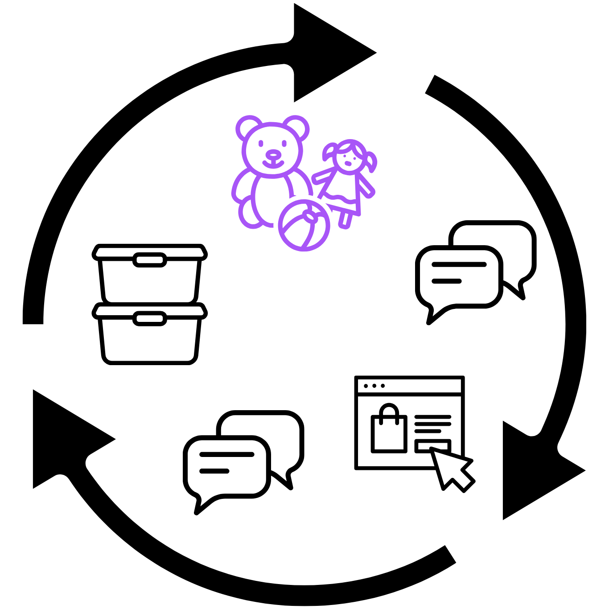
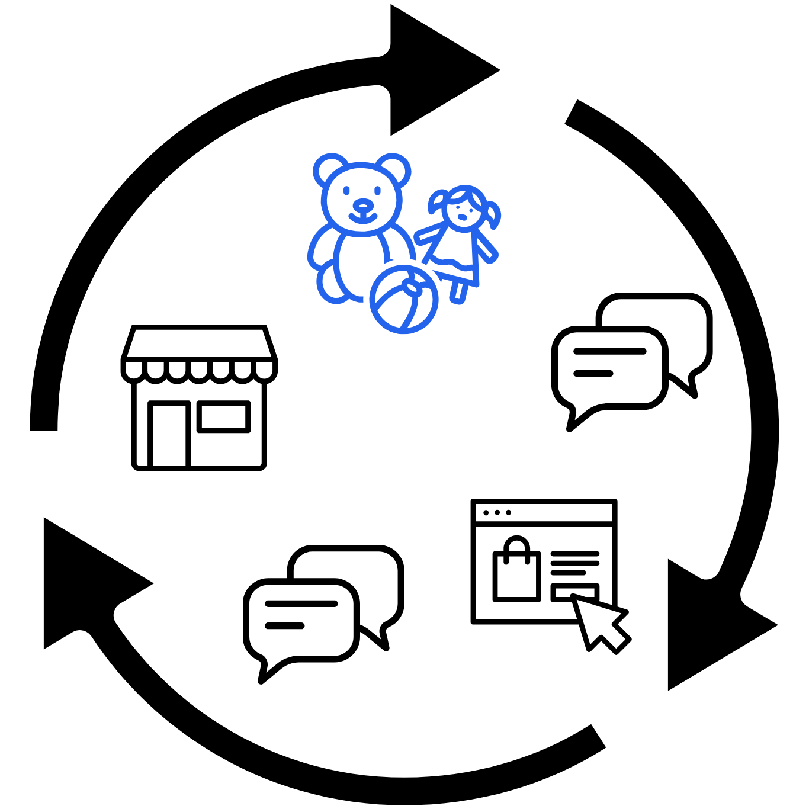
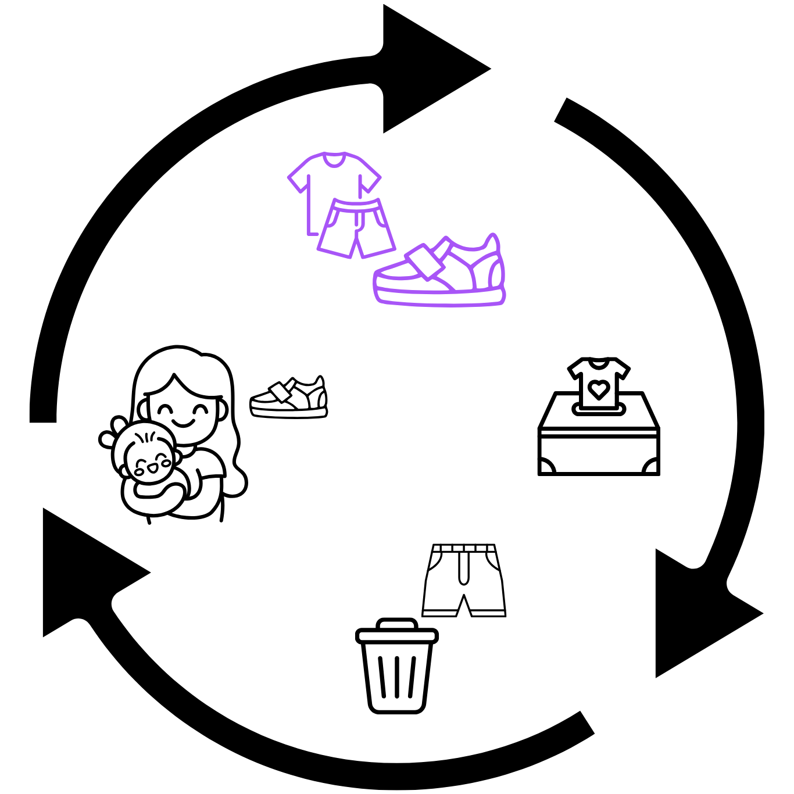
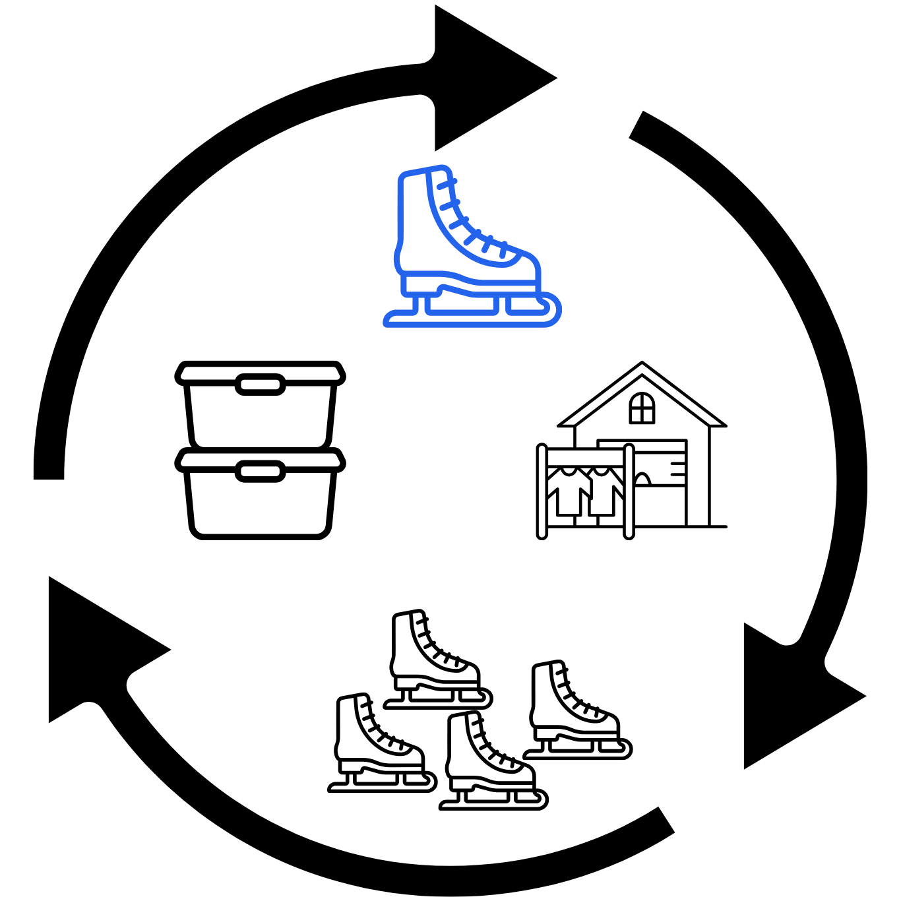

Tap the screens
to help me gain valuable experience!
Analytics
Content Creation
Website Building
Next step
UX Experience
Open my first projects in UX Research & Design!
Showroom
Open
Xelebrate
Open
Kloop
Open
Stakeholder
User groups
Journey mapping
HCD
Interviews
MVP
Empathize
Ideate
Prototype
Interviews
Pain points
Insights
User journey
Pains & gains
Testing
Define
Design
Test
Next step
Let's connect!
Tap my phone to get my contacts.
Send a paper plane to share my portfolio.
Grab the paper from my bag to download my CV.
Showroom
Xelebrate
Designing collaborative wedding planning
The Challenge
Planning a wedding can feel like a full-time job. Our user research revealed just how overwhelming it becomes — especially when couples are navigating dozens of decisions, undefined roles, budget uncertainties, and a lack of support.
Disclaimer:
We developed and tested an interactive MVP with real users. Due to confidentiality, detailed designs and test results cannot be shared at this stage. Insights presented here are anonymized and generalized.
Overview
Project Type: Group project at FHNW
Focus: UX Research, Requirements Engineering, Concept Development
Duration: 6 months
Target Users: Engaged couples, planning their wedding without a dedicated planner
Methods: Interviews, Journey Mapping, User Stories, Value Proposition Canvas
My Role: As part of a 4-person UX team, I actively contributed to user research, synthesis, and the definition of product requirements.
Our Story
We started this project with a hypothesis: that couples struggle most with finding and managing wedding vendors. Our concept focused on offering a reliable marketplace with booking features and curated service lists.
But as we began talking to potential users, our direction radically shifted. What couples actually needed was not a better vendor list but emotional clarity, a sense of control, and support in making hundreds of personal decisions together.
The Approach
We followed a classic UX process, but let research guide every pivot and priority.
Market Analysis
We examined the existing wedding tech landscape, identifying gaps in existing tools:
Focus on inspiration and booking.
To-do lists are rigid and generic.
Multiple disconnected tools.
Lack of collaboration.
Interviews for User Research
Through in-depth interviews with recently married and engaged individuals, we explored their planning journeys.
How did they start?
What decisions caused friction?
How did they feel during the planning process?
What made them feel confident or overwhelmed?
Synthesis & Affinity Mapping
To manage large volumes of qualitative data, I created a custom GPT that allowed our team to query interview transcripts and reference synthesis notes in seconds, saving time and improving consistency during concept development.
We clustered insights to find repeating pain points.
Surprisingly, the vendor search was rarely the bottleneck:
Mental overload
Unclear starting points
Missed deadlines
Decision fatigue
Lack of shared overview
Emotional pressure
“I never really had a clear picture of what was happening when or everything that had to happen.” – F.
The Pivot
At this point, we decided to shift our concept from a vendor directory to a smart, collaborative planning companion. Instead of helping couples find services, we would help them plan together, with less stress, more structure, and a clear overview.
“It felt like project management. But when it worked, it gave us peace.” – O.
Journey Mapping
We mapped emotional highs and lows from engagement to wedding day. This helped us pinpoint key stress phases and uncover opportunity areas where a digital tool could reduce anxiety.
User Stories
We wrote prioritized user stories to frame key features. These stories later shaped our usability test scenarios and informed our design priorities.
“As a bride, I want a shared checklist with my partner, so I can feel supported and stay in sync.”
Value Proposition Canvas
We analyzed user pains and gains to define the most relevant product values — from clarity and overview to task sharing and emotional reassurance. This became the foundation for our MVP requirements.
Building and Testing a Prototype
After translating research insights into product requirements, we built a clickable MVP and conducted usability testing with our target group. While detailed outcomes are confidential, the tests confirmed core assumptions and guided the next iteration.
Kloop
Designing an effortless way to pass on kids’ things
The Challenge
Most parents know the pile of outgrown kids’ clothes, toys, and other stuff in the basement.
In Switzerland, where many families can afford to buy new, these piles often end up in the trash.
Selling or donating takes too long, yet throwing things away feels wrong: parents feel guilty knowing that perfectly usable items add to waste and overconsumption.
Disclaimer:
Kloop is a student project created as part of the Google UX Design Professional Certificate.
The given task was to design an app for buying and selling secondhand children’s clothes.

Overview
Project Type: Student project within the Google UX Design Professional Certificate
Focus: The first phases of the design thinking framework: Empathize, Define, Ideate
Duration: 2 months
Location: Baden - Niederrohrdorf, Switzerland
Target Users: Eco-conscious and busy parents
Goal: To explore how to design a system for passing on kids’ things that feels effortless, trustworthy, and emotionally rewarding for parents.
Before diving into design, I explored how parents in Switzerland already buy, sell, or recycle kids’ items.
I compared popular resale platforms, donation options, and recycling programs.
Summary of key tools and their main limitations:
Tutti / Ricardo - established secondhand platforms: slow and effort-heavy.
Facebook Market / local WhatsApp chats and Facebook groups - easy to start, but unreliable and time-consuming.
Kinderbörsen / garage sales - good for bulk selling, but require time, transport, and planning.
Thrift stores (Brocki) - sustainable, but limited in what they accept.
Texaid / store take-back (H&M) - easiest option, but no visibility of what happens next.
Existing Tools Mapping
Is it possible to design a recycling system that feels effortless and rewarding for busy parents?
The Research
I led the research process to understand why “keeping things in the loop” so often fails in practice. Why do parents who care deeply about sustainability still end up throwing usable kids’ things away or storing them in the basement?
The Questions
How do parents usually buy, sell, and pass on kids’ items?
How did parents manage kids’ items the last three times?
How do other parents in their neighborhood or social circle usually handle it?
Where exactly do time, effort, and motivation get lost?
What emotional factors influence these choices?
What matters most to parents when dealing with secondhand kids’ things?
Interviews
I conducted three interviews with parents living in Switzerland, each representing a different lifestyle and different goals in dealing with secondhand items for children:
Parent 1: J.
Mother of a 12-year-old and a 3-month-old
Currently on parental leave
Recently moved from Germany
She deeply values sustainability and tries to reuse or repair everything. Without a car, even giving things away can be challenging, and she often stores unused clothes in the basement for lack of better options.
“I try to avoid throwing things away unless they’re really broken. A lot of things stay in the basement because I don’t know what else to do with them.” – J.
Parents 2: M. & G.
A couple with two boys, aged 7 and 11
Both working full-time
Moved to Switzerland from France 12 years ago
They buy and receive from friends many secondhand items because of shared values of sustainability and thrift. Yet their home and basement are cluttered: they rarely sell or donate because they lack time, even though they dislike waste.
“If I find something good secondhand, I take it right away. You never know if you’ll see it again. Especially kids’ and sports gear, because the boys keep growing.” – M.
Parent 3:
Mother of an 11-year-old girl
Working part-time
Swiss native
She cares about sustainability but prioritizes quality: she buys and sells only high-quality secondhand items, saying cheaper ones aren’t worth the effort or the child’s demand.
Items of lower value are typically discarded rather than reused.
“I only sell things I’d still buy myself. My daughter sometimes sells her toys at school markets for pocket money. The rest I just give away or throw away if nobody wants it” – S.
Interview Synthesis
My initial assumption was simple: parents need better resale tools.
The interviews revealed that parents rarely make decisions based on money alone. Their real motivations are waste reduction, decluttering, and ease:
they want to declutter without guilt, feel that things go to good use, and avoid wasting time.
“I’ve seen in Africa how the market is flooded with donated clothes.” – M.
Many parents believed they were acting sustainably, but their recent actions told a different story.
When the potential financial reward was too small or the process too time-consuming, they chose the most convenient solution even if it conflicted with their environmental values.
“Sometimes the effort just isn’t worth it.” – J.
To better understand these frictions firsthand, I turned the lens on myself. As a mother using the same platforms, I started documenting my own experiences in a diary for one month every time I bought or sold a secondhand children’s item.
Self-Observation

Patterns from the Diary
Effort and duration: Even small actions required coordination.
Quick, “easy” listings still demanded messaging, photo uploads, and constant follow-up.
Safety and protection: After one sale, a buyer continued messaging inappropriately.
I realized that selling from home means giving strangers my address. In addition, it is common to pay online before receiving the item: the transaction is unprotected.
Micro-transactions and noise: Low-priced items generated the most attention and the most friction — too many chats, price discussions, and logistical details for just a few francs of value.
Basement as a buffer: Some items stayed in storage for months after failed sales attempts.
The basement became a compromise: things weren’t thrown away, but they weren’t reused either.
Buying experience: As a buyer, I faced uncertainty and awkward negotiation.
The seller of a secondhand bag refused to name a price, asking me to guess the “correct” one.
This self-observation reinforced the interviews: circular behavior is impractical in daily life.
Research Insights
Sustainability vs. convenience: Parents want to act responsibly, but when time or energy runs out, convenience wins. Selling and donating take too long for too little reward.
Storage as avoidance: Keeping items in basements or boxes feels like a compromise: not throwing away, but not reusing either. It creates hidden waste.
Effort-to-value imbalance: Taking photos, writing descriptions, answering messages, and arranging pickups takes more time than the few francs gained from a sale.
Trust and uncertainty: Parents often doubt the quality of secondhand items and the reliability of buyers or donation programs. This lack of confidence discourages participation.
Different definitions of “worth it”: Some parents seek high-quality resale; others simply want items gone. The shared frustration is the lack of a quick, trustworthy, guilt-free option.
Cultural contrast: Parents from abroad noticed that the circular economy functions more naturally elsewhere. The mother from Germany missed the Umsonstladen, volunteer-run “free shops” where good items are exchanged without money. The French parents described a stronger community spirit and social acceptance of secondhand culture back home. In Switzerland, they felt reuse means more effort and less connection.
“In Switzerland, reuse is neither practical nor social.” – J.
These patterns revealed that “keeping things in the loop” depends less on available tools and more on culture, motivation, and convenience. However, the current systems make sustainable behavior harder, not easier.
User Groups
I defined user groups and problem statements based on behavior and motivations observed during research.
Eco-conscious parents: Motivated to reduce waste but limited by time, transport, and local opportunities. They want to act responsibly but find sustainable actions inconvenient and fragmented.
Problem statement: They need an effortless way to keep kids’ things in use because they want to avoid waste, but there is no big demand for secondhand items.
Pragmatic, time-limited families: Busy parents who buy and accept secondhand items to save money but struggle to sell or donate because it takes too much time. Convenience often overrides sustainability intentions.
Problem statement: They need a quick and low-effort way to declutter responsibly because they have no time to pass on outgrown items, and existing systems are complicated and time-consuming.
Quality-driven minimalists: Parents who value durability and prefer fewer, high-quality items. They selectively buy and sell premium items but discard or store the rest because it’s “not worth the effort.”
Problem statement: They need a curated and reliable way to pass on good items because they want to maintain quality circulation without wasting time on low-value exchanges.
User Journeys
To better understand where circular behavior fails in practice, I mapped four user journeys based on my research.
Journey 1 - Selling: “Toys nobody wants”
Scenario: A mother wants to sell outgrown toys that clutter her child’s room.

Task 1: Takes photos and posts items in a local WhatsApp group.
Pain points:
Time-consuming to take photos and write descriptions
Messages mix with personal chats
Opportunities: Simplify listing creation and separate private and selling communication.
Task 2: Receives a few messages from potential buyers, but they stop replying.
Pain points:
Unreliable communication
No clear status or commitment
Opportunities: Introduce confirmation or reservation functions to prevent ghosting; add response-time indicators, verified-seller options, and seller/buyer ratings with rewards.
Task 3: Posts the same items on Tutti for free, but gets no response.
Pain points:
Low visibility and poor reach even for free items
Discouraging experience
Opportunities: Create a pool of requests and match items automatically with demand.
Task 4: Moves toys to the basement while waiting for replies.
Pain points:
Items end up stored instead of reused
Clutter only relocates
Opportunities: Provide easy “give-away / donate / recycle” alternatives to keep items in use.
Journey 2 - Buying: “The missing pieces”
Scenario: A father searches for a specific toy his child wants.

Task 1: Checks WhatsApp, Facebook, Tutti, and Ricardo for the item.
Pain points:
Scattered platforms
Inconsistent descriptions
Missing information
Repetitive searching
Opportunities: Centralize search or aggregate listings from multiple sources; provide automatic listings with standardized information.
Task 2: Finds a listing, but the seller doesn’t reply for days.
Pain points:
Unreliable communication
Lack of accountability
Opportunities: Add response-time indicators, verified-seller options, and ratings with rewards.
Task 3: Finds another listing, picks it up, and pays. At home, discovers missing parts and throws the toy away.
Pain points:
No protection or refund policy
Trust depends on personal goodwill
Opportunities: Enable safe payments and secure pickups in public spaces such as parcel lockers.
Task 4: Buys a new toy instead.
Pain points:
Wasted time and effort
Negative reuse experience
Price of new item is much higher
Opportunities: Integrate secondhand options directly into mainstream online shopping platforms.
Journey 3 - Decluttering: “Clothes with no clear end”
Scenario: A family wants to clear their children’s room of outgrown clothes.

Task 1: Sorts items into good, very good, and bad condition.
Pain points:
Sorting takes time
Creates emotional stress about waste
Opportunities: Offer simple guidance or digital support for sorting decisions, with recycle and donation options.
Task 2: Donates good items to boxes; throws away damaged ones.
Pain points:
No feedback on what happens to donated items
Feels impersonal
Suspicion they end up in landfills abroad
Opportunities: Provide transparency and confirmation of reuse impact.
Task 3: Gives the best pieces to a neighbor.
Pain points:
Limited reach
Depends on personal network and timing
Opportunities: Expand trusted local exchange circles to more families.
Journey 4 - Buying in bulk: “Just in case”
Scenario: Parents of two hockey-playing kids buy used equipment whenever they see good deals.

Task 1: Visit yard sales and Börsen events; buy multiple pairs of skates.
Pain points:
Hard to estimate future need
Impulse buying leads to surplus
Opportunities: Provide inventory tracking, need estimates, or reminders of existing stock.
Task 2: Store unused equipment in the basement “for later.”
Pain points:
Accumulation leads to hidden waste and clutter.
Opportunities: Provide easy inventory tools or community sharing options for sports gear; integrate resale opportunities into the buying process.
How Might We...
To move from research to ideation, I translated the key pain points into “How Might We” questions.
How might we make it effortless for parents to pass on kids’ things to others who need them?
How might we reduce the time and coordination required for selling, giving away, or donating?
How might we make sustainable actions more visible and emotionally rewarding?
How might we build greater commitment among users in the circular economy (reduce ghosting and inaccurate listings)?
How might we remove pickup and drop-off tasks from the user’s to-do list?
How might we ensure that reuse feels trustworthy, social, and human?
How might we make offloading items take under 60 seconds?
How might we remove uncertainty around donations and give users confidence in their real impact?